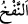
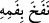
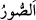
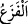
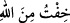
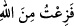
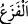

“Sûr’a üfürüldüğü gün,”
“
” bir şeyin içine yel üfürmek, “
” ağzından yel çıkarmak demektir. “
”
İsrâfil (a.s.)’ın ölüm ve haşr için içine üfürdüğü boynuzdur. Sanki ordu komutanları,
askerlerini toplamak için kullandıkları borazanları buradan almışlardır. Bir hadîste
şöyle buyrulmuştur: “Allah, gökleri ve yeri yaratma işini bitirince, sûru yarattı ve onu
İsrâfil’e verdi. O da (sûra üfürmesi) ne zaman emrolunacak diye gözünü Allah’ın
arşına diktiği halde onu ağzına koydu.”
Râvî Ebû Hüreyre (r.a.) der ki: “Yâ Rasûlallah, sûr nedir?” diye sordum.
“Boynuzdur.” buyurdu. “O nasıldır?” dedim. “Çok büyüktür. Nefsim kudret elinde olan
Allah’a yemin ederim ki o, gök ve yer arası kadar geniş büyük bir dâiredir. İsrafil
(a.s.) ona üfürmekle emrolunur. O da bir defa üfledi mi Allah’ın dilediği dışında hiç
bir canlı kalmaz. Nitekim âyette şöyle buyrulmuştur: “Sûr’a üflenince, Allah’ın
diledikleri müstesna olmak üzere göklerde ve yerde ne varsa hepsi ölecektir.” (ez-
Zümer, 39/68). Sonra İsrâfil (a.s.)’a tekrar emrolunur. O da ikinci bir defa daha
üfledi mi onunla birlikte hiçbir ölü kalmaz mutlaka yeniden dirilir ve kalkar. Nitekim
Allah Teâlâ “Sonra ona bir daha üflenince, bir de ne göresin, onlar ayağa kalkmış
bakıyorlar!” (ez-Zümer, 39/68) buyurmuştur.”
Bu konu ile ilgili bazı hususlar Kehf sûresinde geçmişti.
Âyetteki “üfürme” ile sûra ikinci defa üfürülme kasdedilmiştir. Mânâ ise şöyledir:
“Ey Muhammed! Sûra ikinci defa üfürüldüğü günü kavmine zikret/hatırlat. Yâni İsrâfil
(a.s.), kıyamet gününde ruhların bedenlerine geri dönmesi için sûra ikinci defa
üfleyecektir.
“-Allah’ın” kalblerine sebat vererek korkmamasını “diledikleri müstesna-,” Bunlar,
kendileri için korku ve üzüntü olmayan peygamberler, velîler, şehidler ile dört büyük
melek, arşı taşıyan melekler, (cennet ve cehennemin) bekçileri, hûrîler ve benzerleridir.
Eğer âyette kasdedilen ölüm dehşeti (birinci sûr) ise bu durumda istisnâ edilen et-
Teysîr’de belirtildiği üzere İdris (a.s.) ve Mûsâ (a.s.) gibilerdir. Çünkü o, Tur dağında
düşüp bayılmıştı. Artık bir daha düşüp bayılmaz.
“Göklerde ve yerde bulunanlar hep dehşete kapılır.” ve korkar.
Âyette bu hususun mâzî/geçmiş zamanla ifâde edilmesi, onun mutlaka olacağına
delâlet etmek içindir. Çünkü gelecek ifâdesi, Allah için kullanıldığında tıpkı geçmiş
zaman ve diğerleri gibi kesinlik ifâde eder. Zîrâ Allah Teâlâ’nın verdiği haber
haktır/mutlaka gerçekleşir.
“
” korkulan bir şeyden dolayı insana ârız olan daralma/sıkılma ve ürküp kaçma
hâlidir. Onun için “
” denildiği gibi “
” denilmez. Âyette “
” ile
kasdedilen, yeniden diriltilme ve canlanma sırasında iç ve dış âlemde meydana gelen
alışılmışın dışındaki korkunç halleri görmekten mü’min-kâfir herkesi kaplayacak olan
zorunlu ve insan tabiatından kaynaklanan korku ve dehşettir.